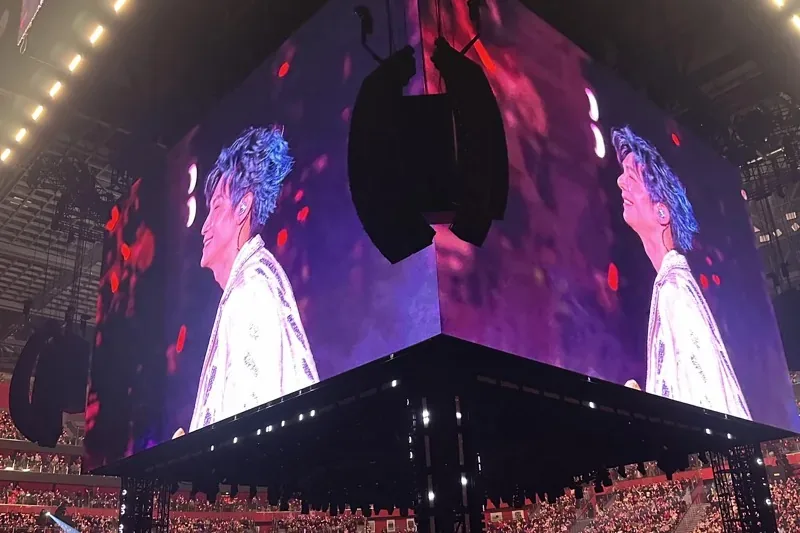

What is stadium video board size and sightline planning? It is the work of setting how large an LED video board should be, where it should sit in the bowl or arena, and what pixel pitch it should use, so that the people who must read it — spectators, cameras and, in some rooms, the players — can actually see it, without the board blocking a seat, a camera or a roof structure. The buying decision is not a single diagonal copied from another venue. It is a stated set of viewing distances, a sightline study, a content format, and a cabinet series whose pitch and brightness match those distances.
This guide is for venue owners, AV integrators and consultants writing a main stadium LED video board, an end-zone or corner board, or a comparable large sports display. It does not replace the center-hung arena scoreboard guide, which covers hung cubes and their published structural issues, or the viewing-distance guide, which records the industry rule of thumb for pitch versus distance. For the venue as a whole, use the sports venue guide and the stadium tender guide. Broadcast-facing walls are covered in the stadium broadcast guide. Ribbon and fascia boards around the bowl are specified separately in the stadium ribbon board guide.
A board that is large enough on a rendering can still fail in the room: it can sit behind a roof girder for a whole bay of seats, wash a camera, or be so coarse that the upper tier can see colour but not a substitution or a replay scorebug. Size, location and pitch are one design.
If the RFQ only names a width, a height and “an LED video board,” the bidder is free to quote a screen that fits the steel and misses the seats. Ask for a sightline statement: which seats must have a clear view of the board, which seats are allowed a compromised view, and who signs that drawing — usually the venue architect or a sightline consultant, not the LED factory alone.
Start with two measurements that are often missing from a first brief: the closest spectator (or camera) that will resolve the board as a picture, and the farthest spectator who is still expected to read typography on it. The viewing-distance guide records a common industry rule of thumb: the minimum comfortable viewing distance in metres is roughly the pixel pitch in millimetres. It is a rule of thumb, not Asia Vision’s own data, and not a substitute for a seat test or a content trial.
A stadium LED video board is usually read from a much longer distance than a control-room wall, so the useful pitch is often coarser than an indoor fine-pitch series. That is expected. What is not acceptable is to pick a pitch from another project, or from a meeting-room wall, and scale the cabinet count to fill a hole in the facade. Put the two distances in the annex and ask the bidder to propose a pitch — and to say which content (replay, clock, sponsor still, fine text) the far seats will actually resolve.
Board size should follow the content and the seats, not only the available steel. A 16:9 replay surface, a taller board that also carries a persistent clock and sponsor frame, and a very wide end-zone board are three different canvases. State the native format the house will run, and whether one board must do replay, score and advertising at once or whether those jobs are split across a main board and a ribbon.
This article does not publish a mandatory board height as a fraction of the field, a league-required diagonal, or a “minimum 10-millimetre pitch for stadiums.” Competition organisers and rights holders sometimes do publish technical regulations; when they apply, attach the document. Do not ask the LED bidder to invent a rule that the organiser has not issued. A useful RFQ instead states the farthest seat that must read a scorebug, the closest seat that must not be dazzled, and the aspect ratio of the programme feed.
Figure 1 shows a center-hung LED cube in an arena, with the same content on more than one face and a speaker cluster in the middle. That is a different sightline problem from a single corner or end-zone board in a football bowl: several directions, a hung load, and seats all around. Size it with the center-hung guide, not with a stadium end-zone formula.

A football or outdoor stadium usually places one or two large boards at the ends or corners, sometimes with smaller auxiliary boards, and the long view is down the bowl. An indoor arena often hangs a four-sided cube over the floor and adds fascia ribbon, so almost every seat looks at a different face.
In a bowl, check roof steel, corner sightlines, and whether a board in one corner leaves a stand with no comfortable view — a second board may be a sightline decision, not an upsell. In an arena, the hung weight, hoisting, and clearances below and above the cube are part of the same study; the center-hung guide is the place for that, including the warning not to invent cabinet weights that the product page does not publish.
Players, officials and broadcast cameras also have sightlines. A board that is comfortable for the upper tier can still throw light into a camera or sit in a lens flare path. The stadium broadcast guide covers camera-facing behaviour; put any no-go zones for cameras and for on-field sightlines in the annex, and require the bidder to work with the house broadcast and lighting plan rather than to guess.
Asia Vision does not publish a standard stadium video-board size, a recommended diagonal, or a sightline drawing. The product pages give cabinet series that can be built into a large outdoor or touring surface; the size of the board is a project decision.
D-PRO is the outdoor SMD fixed series intended for high-brightness outdoor work: P5 / P5.7 / P6.67 / P8 / P10, module 480 × 320 mm, brightness up to 10,000 cd/m², front maintenance. The specification table does not publish an IP rating, a refresh rate or a viewing angle. For an exposed bowl, those figures must be confirmed on the quotation. COB EH-PRO publishes a finer outdoor pitch (P1.5625 / P1.953), 3500 cd/m², contrast ≥10000:1, IP65 and refresh ≥3840 Hz — more often a closer-view outdoor surface than a long-distance far-stand board. COB ZH is a touring COB series at P1.95 / P2.6, 4000 cd/m², refresh ≥7680 Hz, wind resistance up to 20 m/s, useful when the board is a hire or an overlay rather than a permanent bowl installation. E-PRO is a high-end rental series with SMD and COB options for XR and events; it is not a default stadium fixed-board specification unless the RFQ is actually a hire.
None of those pages publish a board height, a seating-capacity formula, a wind-load certificate for a particular stadium, or a league approval. Product pages publish a 3-year warranty and 18-day standard factory dispatch. A large custom array, steel interfaces, or a site lift can take longer than that dispatch figure and should sit in the programme.
A workable stadium video board size RFQ ties the canvas to seats and cameras:
Attach a bowl or arena drawing, the two viewing distances, the programme format, and any organiser technical regulation that actually applies. If a second board, a ribbon, or a center-hung cube is part of the same project, specify each surface separately so the pitches and brightnesses are not silently copied from one to another.
For a permanent outdoor bowl board at typical stadium distances, start with D-PRO and confirm protection, pitch and brightness on the quotation. For a closer-view outdoor fine-pitch surface, start with COB EH-PRO. For a touring or overlay board, start with COB ZH or, if the hire is an event or XR-led surface, E-PRO. Send the intended width and height if you have them, the closest and farthest seats, and whether the job is fixed or a hire. We will confirm the cabinet series and, on the quotation, any protection or interface items that can be offered. We will not invent a standard board size, a league-required diagonal, or an ingress rating that is not published on the product page. Start the enquiry through the contact form or email info@asiavisionled.com.
Sizing a stadium or arena LED video board? Send the intended dimensions if you have them, the closest and farthest seats, and whether the job is fixed or a hire, and we will reply with the cabinet data that can be confirmed. Start a project enquiry.